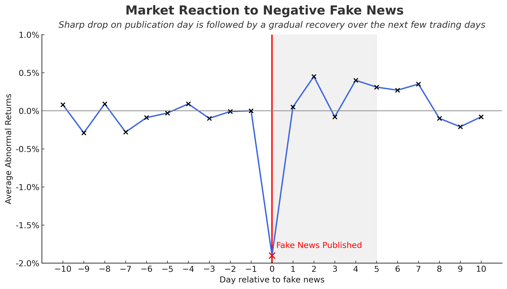

When Rumors Move Billions: What Fake News Does to Stock Prices
What happens when a lie spreads faster than the truth and the stock market listens?
Imagine scrolling through Twitter and seeing the following post: “Apple under SEC investigation for accounting fraud.” The tweet spreads fast. Traders react. Apple’s stock drops, at least for a moment, before the rumor is debunked and the price recovers.
But what if fake news does more than cause a quick scare? What if it leaves a lasting mark on financial markets?
That’s exactly what a recent paper by Arcuri, Gandolfi, and Russo (2023) set out to explore: how lies and viral headlines can influence market behavior, particularly through investor reactions in the United States and the European Union.
How They Did It
To determine how markets responded, the authors employed an event study. This method compared actual stock returns around the time of the fake news event with what would normally be expected, helping to isolate the specific impact of the false story. They also ran OLS regression analysis to examine which factors influenced the size of the market reaction.
But they didn’t stop there. The paper also digs into deeper questions that I found particularly relevant:
- Are some markets more sensitive than others?
- Do prices bounce back quickly, or does the damage linger?
- Are smaller firms more vulnerable than larger ones?
- And does the type of fake news matter?
The result is one of the most detailed studies I’ve seen on how disinformation, not from companies themselves but from external sources, affects real-time investor behavior.
What They Found
Fake news does move markets. In some cases, the effect is temporary. In others, it sticks longer than you’d expect. Here’s what stood out to me.
One of the clearest findings was the short-term market reaction. Immediately after a fake news event, stock prices often dropped significantly, sometimes by nearly 2% when the story was negative. That may not sound catastrophic, but it’s far from trivial, especially for investors holding the affected stocks. The speed of the reaction suggests that markets respond almost immediately, before the accuracy of the information can be verified.
Here’s a visual summary of this drop-and-recovery pattern:

There were hints that European markets may have reacted more sharply than U.S. markets in some instances. Still, the authors were cautious in concluding, given the smaller EU sample size and the fact that most statistically significant effects were found in the U.S. data.
Still, the possibility was intriguing — could differences in investor behavior, media ecosystems, or institutional trust be driving regional variation?
In most cases, prices began to recover within a couple of days, suggesting that the market eventually corrects itself. But that recovery wasn’t always immediate. In some cases, especially involving negative fake news, the effects persisted for up to five trading days. That delay matters because even a short-lived mispricing can cause significant volatility and losses, especially for retail investors or algorithmic traders caught off guard.
Smaller firms turned out to be especially vulnerable. This isn’t surprising, considering that when a company has less public visibility or fewer analyst reports, investors have fewer alternative sources to rely on. So, if a false story spreads, there’s less competing information to correct it.
Finally, the tone and credibility of the fake news mattered. Stories published on professional-looking websites or styled like press releases triggered stronger price movements than obvious hoaxes. Negative stories also had a much greater impact than neutral or positive ones.
Together, these findings give weight to the paper’s main message: fake news — especially when negative and credible — can cause measurable price distortions, particularly for more vulnerable firms.
Why It Matters
I think this research makes one thing clear: fake news isn’t just noise. It creates measurable ripples in financial markets, and sometimes, it results in real losses.
Market efficiency isn’t bulletproof
According to finance theory, prices should only change when new, relevant information becomes available. But fake news has no informational value.
To me, the fact that it moves prices at all suggests that markets are more fragile than we often assume.Firms with lower visibility are at risk
Smaller companies saw bigger impacts: smaller firms can’t correct misinformation as quickly or as visibly. That has implications for how they manage communication and investor relations.Speed wins over truth
Markets absorb headlines quickly, but unwind the damage slowly, often before a story can even be fact-checked.Regulators may be overlooking a blind spot
Financial regulation typically focuses on insiders or firms misleading the public. But many of these fake news events came from outsiders, including bots, fake websites, and third-party blogs. Because these sources fall outside the scope of traditional oversight, they expose a gap in current regulatory frameworks.
What’s Next?
This paper opens the door to several interesting research ideas. Future studies could examine how algorithmic trades respond to fake news, potentially amplifying or mitigating shocks, and whether institutional investors behave differently from retail investors.
Final Thoughts
Markets run on information, but when that information is fake, the consequences are real. This study shows that fake news can move prices, not just emotions.
As an investor, that makes me think twice before reacting to headlines. In today’s information economy, speed and credibility may matter just as much as truth.
References
Arcuri, Maria Cristina, Gino Gandolfi, and Ivan Russo (2023): Does Fake News Impact Stock Returns? Evidence from US and EU Stock Markets. Journal of Economics and Business, Volume 122, Article 106130.
https://doi.org/10.1016/j.jeconbus.2023.106130
Supported by TRR 266 Accounting for Transparency